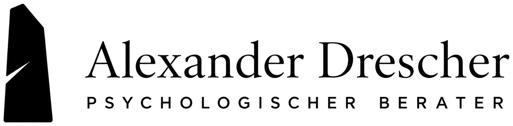

Stressmanagement
Belastungen früher erkennen, wirksam regulieren und neue Kraftquellen entwickeln.

Klarheit · Stabilität · Entwicklung
Psychologische Beratung für Menschen mit Verantwortung – beruflich, familiär und persönlich.
Gemeinsam schaffen wir Orientierung, reduzieren inneren Druck und entwickeln Lösungen, die im wirklichen Leben tragen.
Wobei ich unterstütze
Nicht jedes Anliegen braucht eine fertige Antwort. Manchmal braucht es zunächst einen klaren Blick, einen tragfähigen Rahmen und die Erlaubnis, neue Wege zu erproben.
Belastungen früher erkennen, wirksam regulieren und neue Kraftquellen entwickeln.
Über Körperwahrnehmung und einfache Übungen wieder mehr Präsenz und Ruhe finden.
Rollen, Ziele und nächste Schritte klären – besonders in Phasen der Veränderung.
Unterschiedliche Anforderungen miteinander verbinden, ohne sich selbst aus dem Blick zu verlieren.
Partnerschaft, Familie, Freundschaften und Beziehungen zu Kolleg:innen bewusster gestalten.
Innere Ambivalenzen sortieren und Entscheidungen treffen, die zu den eigenen Werten passen.
Die eigene Widerstandskraft stärken, ohne Belastbarkeit mit Selbstüberforderung zu verwechseln.
Gedankenschleifen unterbrechen, Prioritäten klären und wieder handlungsfähiger werden.
Inneren Druck reduzieren, Fehler zulassen und einen gesünderen Umgang mit Erwartungen entwickeln.
Für Unternehmen & institutionelle Kunden
Praxisnahe Workshops für Unternehmen, Institutionen, Teams und Führungskräfte. Im Mittelpunkt stehen ein gesunder Umgang mit Belastung, bewusste Selbststeuerung und konkrete Übungen, die sich in den Arbeitsalltag übertragen lassen.
Über mich
Ich bin Wirtschaftsjurist mit einem Master of Laws (LL.M.), Psychologischer Berater (ALH) und Vater von zwei Kindern. In meiner Arbeit verbinde ich psychologisches Wissen mit langjähriger Erfahrung aus Beratung, Management und internationaler Unternehmenspraxis.
Mehrere Jahre war ich in einer internationalen Unternehmensberatung tätig, zuletzt als Manager. Heute arbeite ich als Compliance Manager in einem international tätigen Unternehmen mit rund 10.000 Beschäftigten. Dabei beschäftige ich mich mit komplexen Strukturen, Verantwortung, Konflikten, Veränderungsprozessen und der Frage, wie Menschen auch unter hohen Erwartungen gute Entscheidungen treffen können.
Diese Erfahrungen prägen meinen Blick auf psychologische Beratung. Ich kenne beruflichen Druck, anspruchsvolle Rollen und den Wunsch, verschiedenen Erwartungen gleichzeitig gerecht zu werden. Als Vater erlebe ich außerdem ganz praktisch, wie herausfordernd es sein kann, Beruf, Familie, Partnerschaft und eigene Bedürfnisse miteinander zu verbinden.
Psychologische Themen begleiten mich schon lange. Auch unabhängig von meiner beruflichen Ausbildung habe ich mich intensiv mit psychologischen Verhaltensmustern, Stoizismus, Meditation und buddhistischer Psychologie beschäftigt. In persönlich herausfordernden Phasen haben mir diese Perspektiven geholfen, meine Situation neu zu betrachten, mich neu zu orientieren und mehr innere Ruhe zu entwickeln.
Dabei bedeutet Ruhe für mich weder Rückzug noch geringere Leistungsfähigkeit. Oft ist das Gegenteil der Fall: Wenn weniger Energie in Grübeln, inneren Druck, überhöhte Ansprüche oder festgefahrene Denkweisen fließt, entsteht wieder Raum für Klarheit, Präsenz und bewusstes Handeln.
In meiner Beratung verbinde ich deshalb das Verstehen psychologischer Muster mit Stressmanagement, Resilienz, Achtsamkeit, Meditation sowie Atem- und Körperarbeit. Der Weg führt dabei häufig vom Kopf zurück in den Körper – ohne den analytischen Blick zu verlieren.
Mein Beratungsstil ist ruhig, empathisch und lösungsorientiert. Ich möchte Menschen dabei unterstützen, ihre Situation besser zu verstehen, eigene Handlungsmöglichkeiten zu erkennen und Veränderungen zu entwickeln, die nicht nur im Gespräch überzeugen, sondern auch im Alltag tragen.
Ablauf
Wir klären Ihr Anliegen und prüfen in einem unverbindlichen Gespräch, ob die Zusammenarbeit passt.
Wir betrachten Ihre Situation strukturiert und machen relevante Zusammenhänge sichtbar.
Sie entwickeln konkrete Schritte, die nicht nur im Gespräch, sondern auch im Alltag bestehen.
Kontakt
Schreiben Sie mir kurz, worum es geht. Ich melde mich persönlich und wir klären unverbindlich, ob mein Angebot zu Ihrem Anliegen passt.
Psychologische Beratung ersetzt keine Psychotherapie und richtet sich nicht an akute psychische Krisen oder behandlungsbedürftige Erkrankungen.